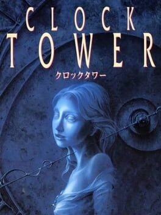
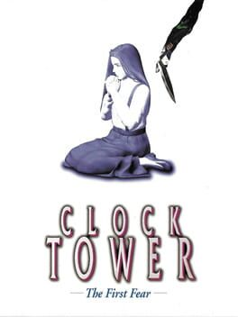

<-- Voltar para a página principal
 
Clock Tower, também chamado de Clock Tower: The First Fear (relançamento de PlayStation) é um videogame do gênero aventura point-and-click, terror, e suspense. É o primeiro jogo da saga Clock Tower.
O jogo foi feito inicialmente para o Super Nintendo Entertainment System (SNES), e recebeu mais três relançamentos: